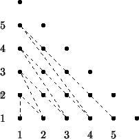
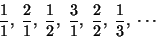

Cantor Fractions
In the late XIXth century the German mathematician George Cantor argued that the set of positive fractions Q+ is equipotent to the set of positive integers N, meaning that they are both infinite, but of the same class. To justify this, he exhibited a mapping from N to Q+ that is onto. This mapping is just traversal of the N x N plane that covers all the pairs:

The first fractions in the Cantor mapping are:

Write a program that finds the i-th Cantor fraction following the mapping outlined above.
The inputs consists of several lines with a positive integer number i each one.
The output consists of a line per input case, that contains the i-th fraction, with numerator and denominator separed by a slash (/). The fraction should not be in the most simple form.
Sample Input
6
Sample Output
1/3